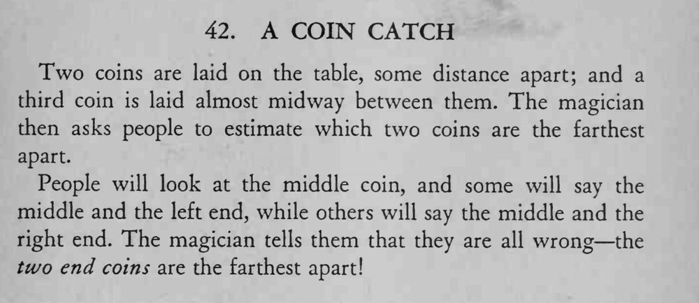

桌上摆三枚硬币，中间一枚略偏一侧；请观众说出哪两枚相距最远，众人多半答错，答案是最外侧的两枚。
中间那枚只稍微偏一点就够了，偏得太多反而会让人看出答案。

Two coins are laid on the table, some distance apart; and a third coin is laid almost midway between them. The magician then asks people to estimate which two coins are the farthest apart. People will look at the middle coin, and some will say the middle and the left end, while others will say the middle and the right end. The magician tells them that they are all wrong the two end coins are the farthest apart!